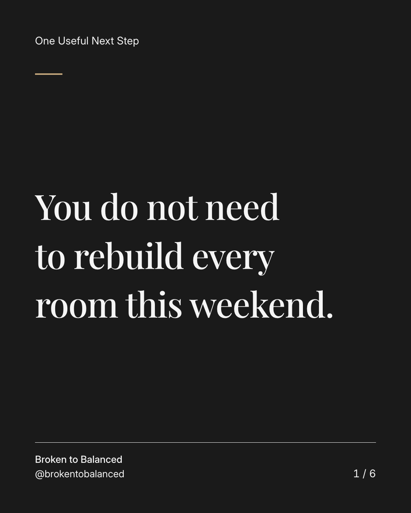
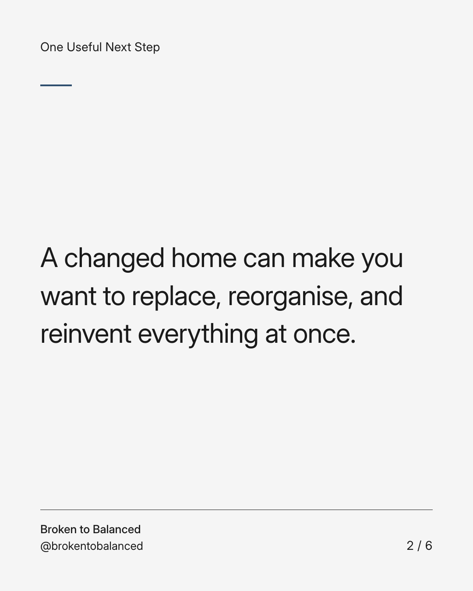
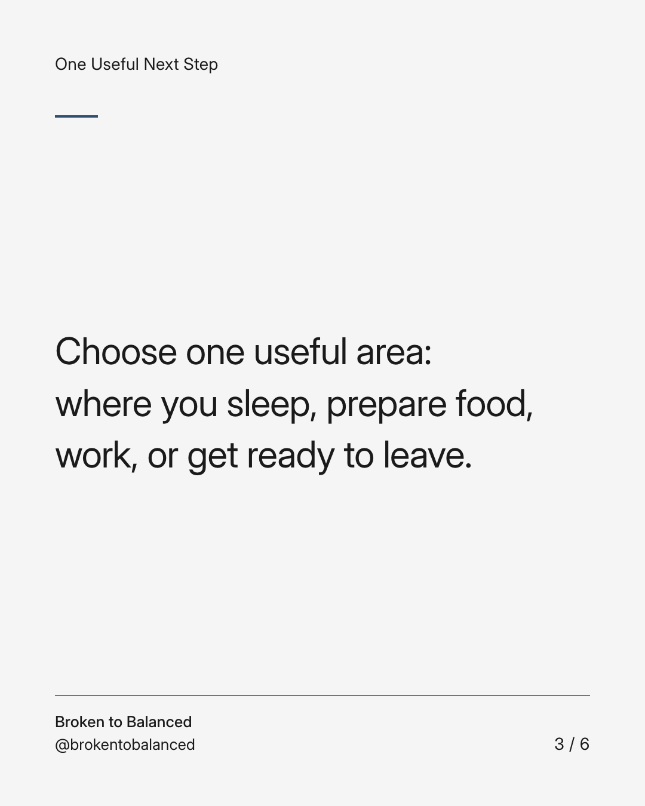
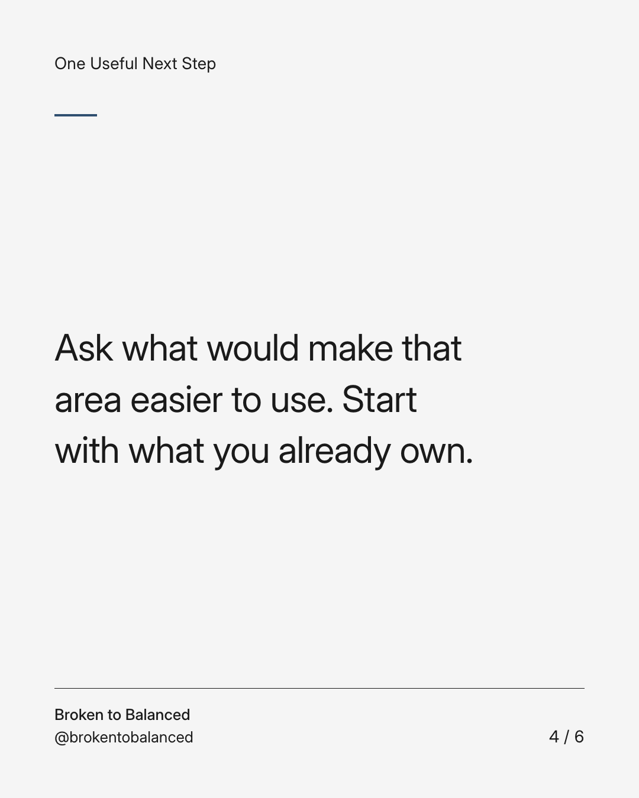
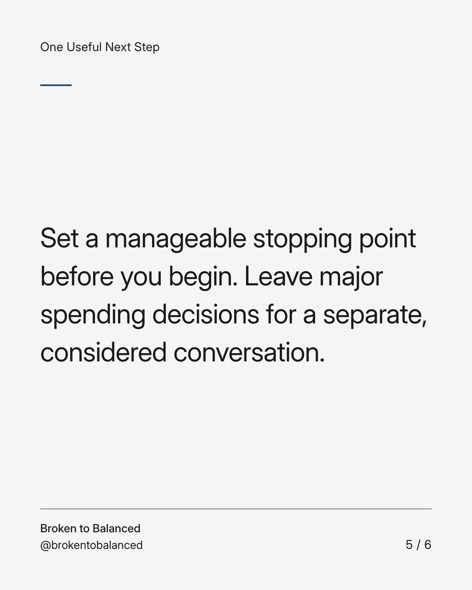
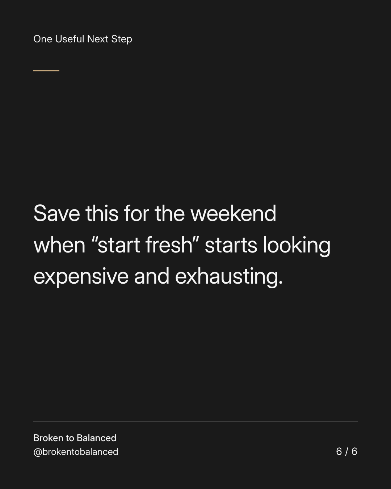

Exact text and accessibility text
You do not need to rebuild every room this weekend.
Slide 1 of 6. You do not need to rebuild every room this weekend.


Exact text and accessibility text
A changed home can make you want to replace, reorganise, and reinvent everything at once.
Slide 2 of 6. A changed home can make you want to replace, reorganise, and reinvent everything at once.


Exact text and accessibility text
Choose one useful area: where you sleep, prepare food, work, or get ready to leave.
Slide 3 of 6. Choose one useful area: where you sleep, prepare food, work, or get ready to leave.


Exact text and accessibility text
Ask what would make that area easier to use. Start with what you already own.
Slide 4 of 6. Ask what would make that area easier to use. Start with what you already own.


Exact text and accessibility text
Set a manageable stopping point before you begin. Leave major spending decisions for a separate, considered conversation.
Slide 5 of 6. Set a manageable stopping point before you begin. Leave major spending decisions for a separate, considered conversation.


Exact text and accessibility text
Save this for the weekend when “start fresh” starts looking expensive and exhausting.
Slide 6 of 6. Save this for the weekend when “start fresh” starts looking expensive and exhausting.
Exact caption
Plain-text fallback: select and copy the caption.